About me
28 years / Minsk, Belarus
I am a Frontend & Playable Ads Developer with 5 years of commercial experience building scalable web applications and high-converting interactive ad experiences. Over the years, I have progressed from creating websites to engineering complex interfaces and ultra-lightweight, performance-driven playable ads.
I actively integrate AI technologies and LLM workflows into my daily process to accelerate coding, debugging, asset optimization, and prototyping—always keeping data privacy and security in mind.
Having worked on fast-paced team projects and client products, I easily adapt to new codebases, shifting priorities, and diverse workflows. This makes me effective in both dedicated frontend roles and cross-functional coordination where quick onboarding and reliable delivery matter most.
What I bring to a team:
- Technical versatility & analytical problem-solving. Strong foundation in frontend architecture, UI responsiveness, and WebGL/Canvas graphics. I apply critical thinking to break down complex issues, identify root causes, and make data-backed decisions.
- AI-enhanced productivity. Practical experience leveraging AI tools and structured prompting to speed up development cycles and optimize creative workflows.
- Business & result focus. Understanding of how clean code, strict file-size limits, and fast load times directly impact product metrics and business goals.
- Cross-cultural communication & teamwork. Proven track record in diverse, distributed teams. I value inclusivity, maintain clear and tactful business correspondence, and adapt my communication style to build trust with stakeholders.
- Ownership & self-management. High attention to detail and diligence in meeting deadlines and SLAs. I manage my time effectively, take responsibility from idea to release, and escalate blockers early to keep projects on track.
- Growth mindset & continuous learning. Quick to master new tools and domains. Outside of work, I maintain an active lifestyle through workouts, reading, and traveling.
I am always open to new challenges and opportunities - feel free to connect or reach out!
Skills
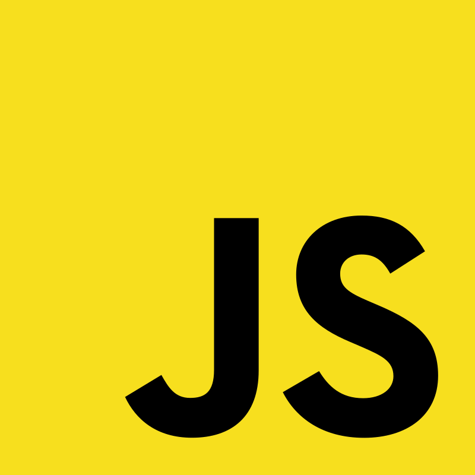
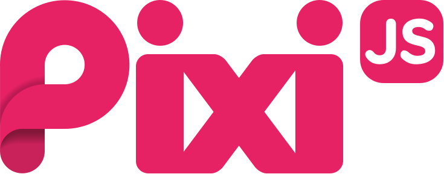
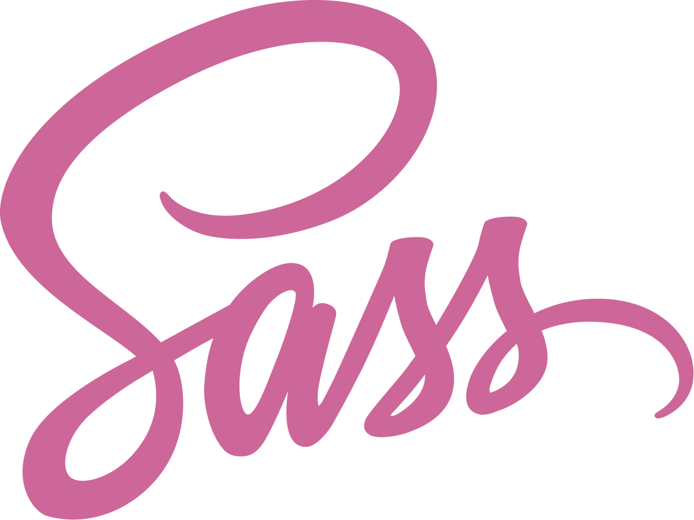
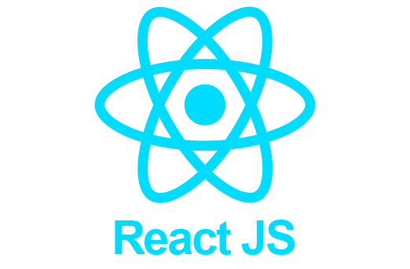
Other hard skills:
UI/UX design, cross-browser and cross-platform layout, CSS/JS animations, optimization, Gulp, Webpack, Bootstrap, Material Design, Smarty, Canvas, API, Mercurial, Ajax, Redux, MySQL, Bitrix, OOP, BEM, cms, VS Code, Pixel perfect, Sliders, Flexbox and grid, Fancybox, WebGL, GSAP, Spine, physics engines, and deep bundle/asset optimization for major ad networks (AppLovin, Unity, Meta, Google, Mintegral), English.
Soft skills:
communication skills, teamwork, responsibility, adaptability, attentiveness, stress resistance, creativity, organizational skills, business correspondence and communication, working with large amounts of information, interpersonal skills, collecting and analyzing information, literate speech.
Experience
Front-end web developer
Severex
Jul. 2025 - present / 1,5 years
Developing scalable websites, mobile-oriented web products, and high-converting HTML5 Playable Ads, while collaborating closely with diverse, cross-functional product, marketing, and client teams.
Key Highlights & Achievements:
- Websites & Web Applications. Engineered responsive, pixel-perfect websites, landing pages, and complex web interfaces using modern JavaScript/TypeScript frameworks, applying high attention to detail to ensure clean architecture and cross-browser compatibility.
- Web Products for Mobile Apps. Built lightweight, mobile-first web products and embedded WebView interfaces tailored for native mobile applications, aligning technical solutions with business goals and user experience standards on iOS and Android.
- Playable Ads Engineering. Designed and developed dozens of interactive HTML5 playable ads using PixiJS/Canvas and GSAP, strictly meeting tight bundle size limits (2MB–5MB) and specifications across major ad networks (AppLovin, Unity, Meta, Google, Mintegral).
- Analytical Problem-Solving & Optimization. Accelerated page load speeds and improved frame rates on low-end mobile devices through code splitting, asset compression, and custom Webpack/Vite pipelines—breaking down complex performance bottlenecks to identify root causes and implement data-backed fixes.
- AI-Driven Workflow Integration. Integrated AI tools (LLMs, AI code assistants, and generative asset tools) into daily workflows to speed up prototyping and debugging, while adhering to data privacy and security best practices.
- Cross-Cultural Collaboration & Ownership. Quickly onboarded onto multiple external client projects and distributed teams. Maintained clear, tactful business correspondence to clarify requirements, adapted smoothly to shifting priorities, took full ownership of tasks to meet strict deadlines/SLAs, and escalated potential blockers early to keep delivery on track.
Front-end developer
CIM
Feb. 2022 - Jul. 2025 / 3,5 years
Responsibilities:
- Development and support of websites.
- Layout based on Figma.
- Optimization of websites.
- Cross-browser and cross-platform development.
- Adaptive and responsive design.
- Writing clean, maintainable and documented code.
- Working with version control systems.
- Interaction with other team members (designers, backend developers, SEO specialists).
- SEO optimization.
- Writing technical specifications and documentation.
Achievements:
- Successfully launched several new websites.
- Actively interacted with the SEO department, implemented technologies for effective advertising of websites and keeping them in top positions in Google and Yandex, which increased sales of the customer's products.
- Optimized page loading time, which increased conversion.
- Reduced the number of bugs and improved the quality of the code.
- Successfully implemented new technologies and tools.
- Improved teamwork and communication (collaborated effectively with other team members).
- Automated development processes.
- Wrote technical documentation for complex functionality, which simplified code support and training of new developers.
Content manager
Seven Travel
May 2017 - Oct. 2021 / 4,5 years
- maintaining the company's website
- work with HTML, CSS, Bitrix
- advertising on marketplaces
- market research
Tourism manager
Tour haute Couture
Jan. 2017 - Mar. 2017 / 3 months
- client consultation and information providing
- collecting, processing and analysis of customer requirements for travel services
- searching and selecting of the most suitable and profitable packages for clients
- maintaining statistics and reporting
Education
Belarusian National Technical University
Speciality: Economics and organization of production.
2017-2022
Average mark: 9,5.
Read more
Member of student science and technology conference at English Language department №1 BNTU. Project: «The Comparison of Soviet and Hollywood films on similar subjects». Awarded with a Certificate of excellence for demonstration English fluency.
Member of the XVII-th Seminar of students of Belarusian universities “The Orthodox Church in the history and culture of Belarus”. Scientific work: “Problems of Medieval Christian Philosophy”.
Member of student science and technology conferencies at BNTU. Scientific works: “Problems of public-relations development in Belarus in modern conditions”, “Viral and guerrilla marketing within the framework of Internet marketing”, “Problems of calculation of profitability in an industrial enterprise and ways to improve it”, “Problems of mechanical engineering in the Republic of Belarus”, “The Genesis of the State”.
Internship
Factory of automobile trailers and bodies «MAZ-Kupava» - Engineer-economist
Branch of Minsk State Linguistic University “Lingvo-humanitarian College”
Speciality: Linguistic resourcing of socio-cultural activity.
2013-2017
Average mark: 9,3.
Read more
Member of the international scientific conferences of young scientists «Youth in science-2015», « Youth in science -2016» at the National academy of science of the Republic of Belarus.
Member of the competition in the National library of the Republic of Belarus. Scientific projects: “The current state of family tourism. Prospects of development of family tourism in Belarus”, “The pearl of Grodno region”.
Internship
Hotel «Victoria» - Receptionist
Tour agencies «Alye parusa», «Mayak tour» - Specialist in tourism
National art museum of the Republic of Belarus - Tour guide
Certificates
CERTIFIACTE OF COMPLETION REACT 2023 Q1 (REACT)
CERTIFIACTE OF COMPLETION JAVASCRIPT/FRONT-END 2022Q3 (JAVASCRIPT)
CERTIFIACTE OF COMPLETION JAVASCRIPT/FRONT-END 2021Q3 (JAVASCRIPT)
CERTIFICATE OF COMPLETION JS/FE PRE-SCHOOL (JAVASCRIPT)
Certificate of participation in the XIII International Scientific Conference of Young Scientists "Youth in Science-2015"
Certificate of participation in the XIII International Scientific Conference of Young Scientists "Youth in Science-2016"
Self-introduction (2021)
Pet projects
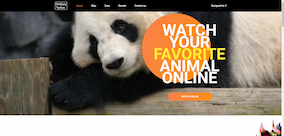
Online zoo
Pixel perfect adaptive layout with random generated sliders and usage of API.
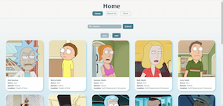
React modules
React app.
Technologies: components, forms, hooks, API, routing, pagination, Redux, Vite. tests.
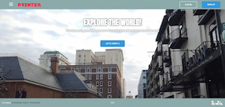
Pointer
Team project. Clone of Geoguessr. LogIn, SignUp, settings, back-end, localization.
Technologies: API, React, TypeScript, Eslint, Prettier, Redux, Sass, i18next.
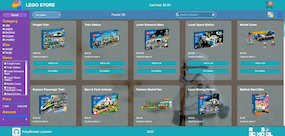
Online-Store
Team project with filters, sorting, search, basket, order.
Technologies: TypeScript, Modules, Webpack, Forms validation, Routing.
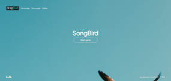
Songbird
A quiz app for birdwatching by voices.
Technologies: JS, API, Modules, Webpack, Eslint, Prettier.
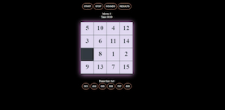
Codejam gem puzzle
Game is a sliding puzzle that consists of a frame of numbered square tiles in random order with one tile missing.
Technologies: Drag-end-drop, Eslint, Canvas.
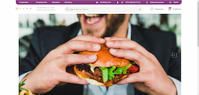
Eat me
Test task (only layout and sliders).
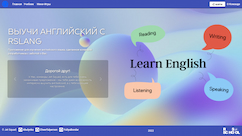
Rslang
Angular app for learning foreign languages, including an electronic textbook with a database of words, mini-games for repetition, a statistics page with LogIn and SignUp.
Technologies: Angular, Typescript, Bootstrap, Angular/material, Angular/localize, Ng-bootstrap.
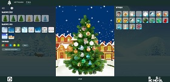
Christmas
The application that allows you to sort and filter toys, find a toy by name, add toys to favorites, decorate a Christmas tree.
Technologies: TypeScript, Modules, API.
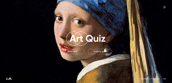
Art quiz
The application is a quiz on the knowledge of masterpieces of painting and their authors.
Technologies: OOP, JS Classes and Modules, Webpack, CSS3 Animations, Local Storage.
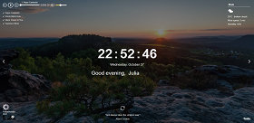
Momentum
An analogue of the Chrome online store app.
Technologies: Date and time, Audio, Local Storage, API, Async/await.
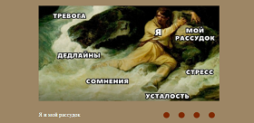
CSS Mem Slider
Slider created using css only.
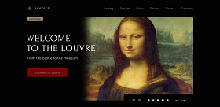
Museum
The website of the Louvre.
Technologies: Pixel perfect, Adaptive layout, sliders, API, Custom Video player, Animations, Mapbox, Flexbox.
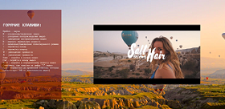
Custom Video Player
A video player executed in accordance with the designer's idea and which appearance does not depend on the browser or device (HTML, CSS, JS).
Technologies: DOM, video.
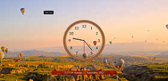
JS Сlock
Mechanical watch with moving hands (HTML, CSS, JS).
Technologies: DOM, date and time.